Fontes revisadas em mapas.json. Verde: existente; amarelo: parcial; cinza: planejado; lilás: externo.
Editar as 15 páginas no draw.io · Índice em Markdown · APIs · Banco
Verde: existente; amarelo: parcial; tracejado: planejado. Casa, praça, academia, idosos e cuidador praticante continuam no escopo.
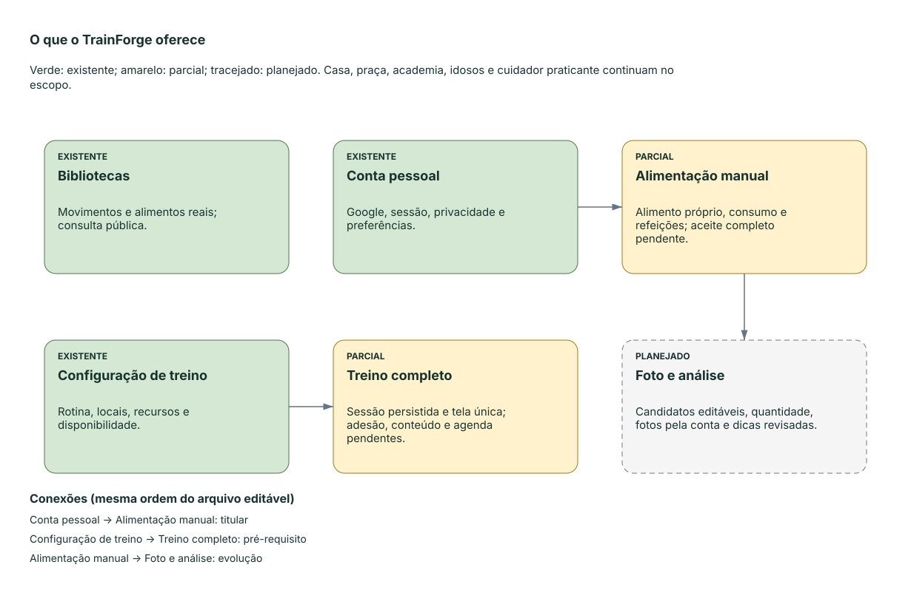
As duas bases usam o mesmo cluster PostgreSQL isolado15432 neste notebook. Isso não constitui isolamento de infraestrutura em produção.
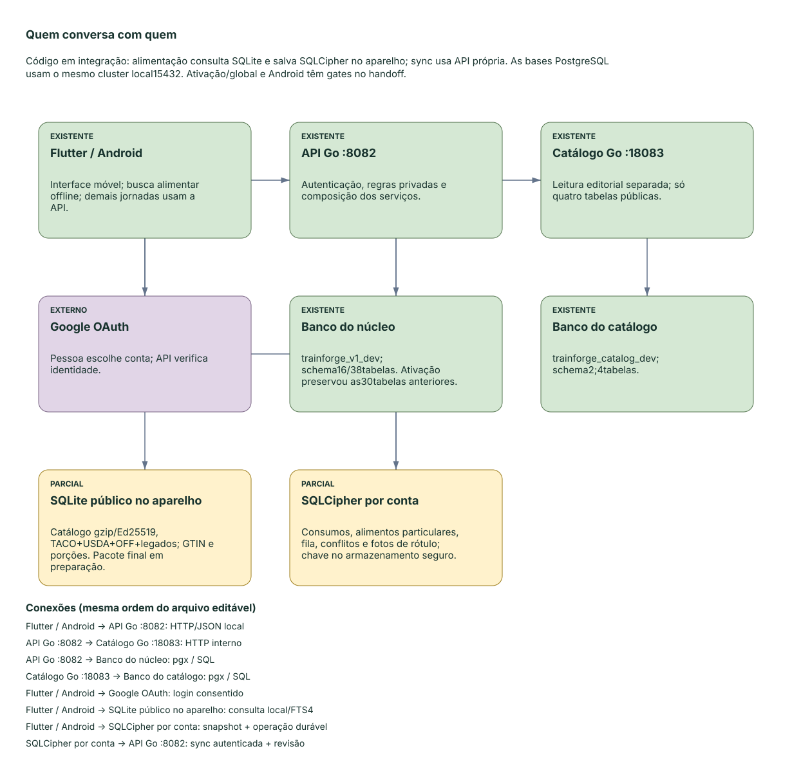
Setas são navegação, não chamadas SQL. Biblioteca e fontes públicas também podem ser acessadas antes do login.
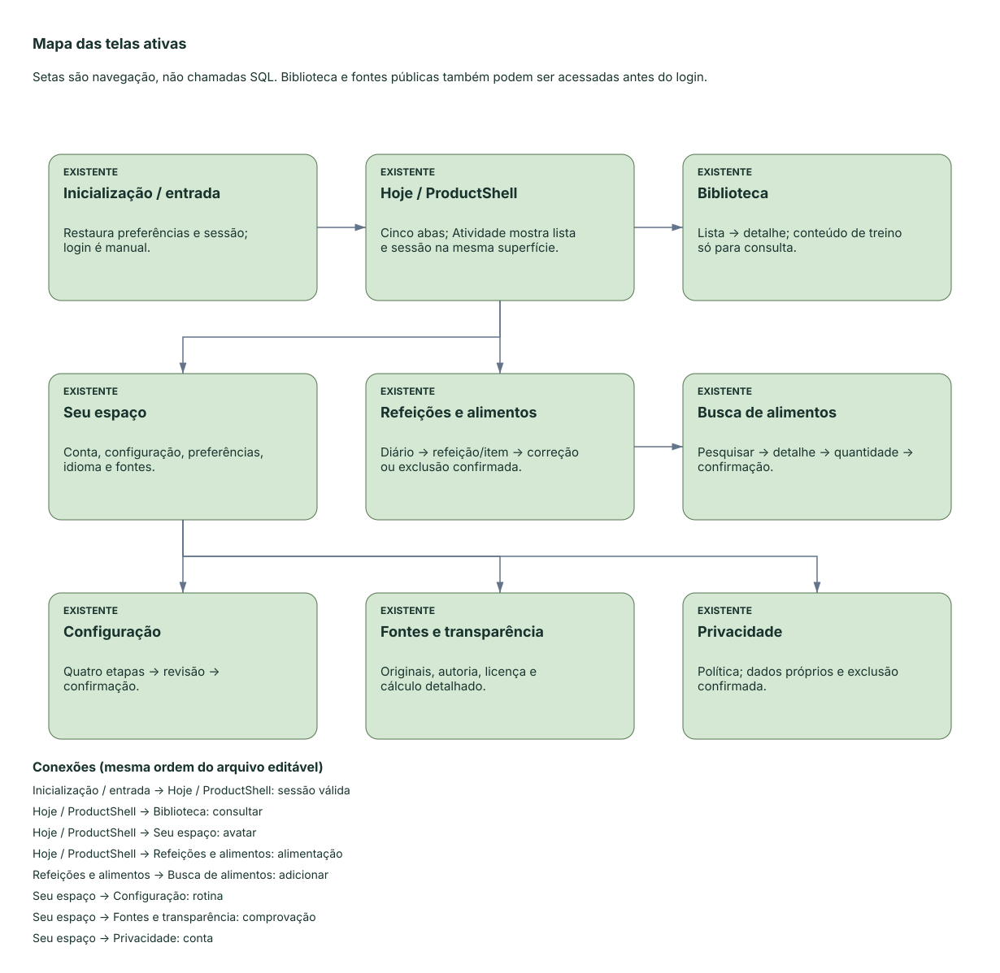
Diagrama omite valores de tokens. Falha de rede não equivale a revogação; login real não é comprovado por fixtures.
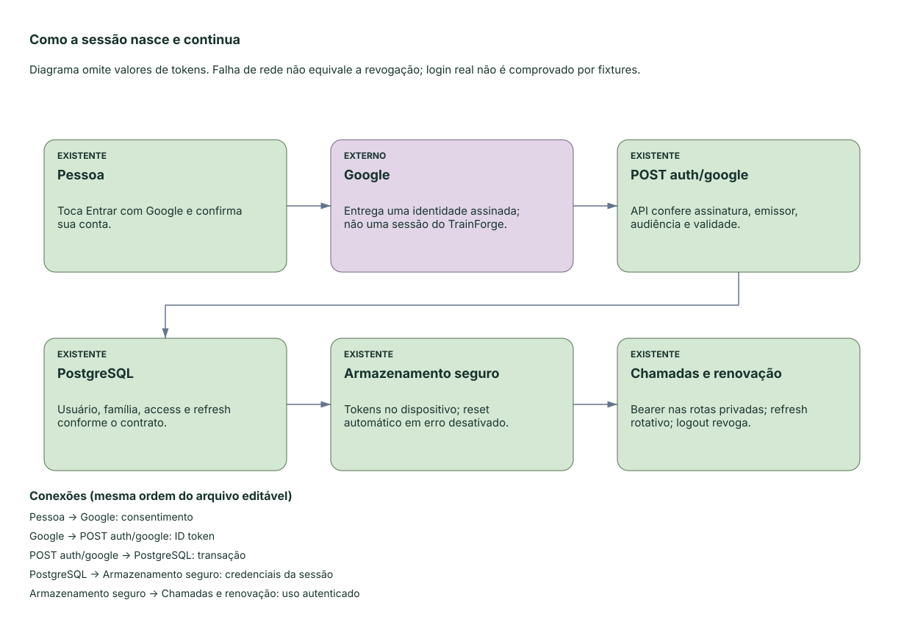
Foto ainda não integra este fluxo. Uma busca ou rascunho não prova que a pessoa consumiu algo.
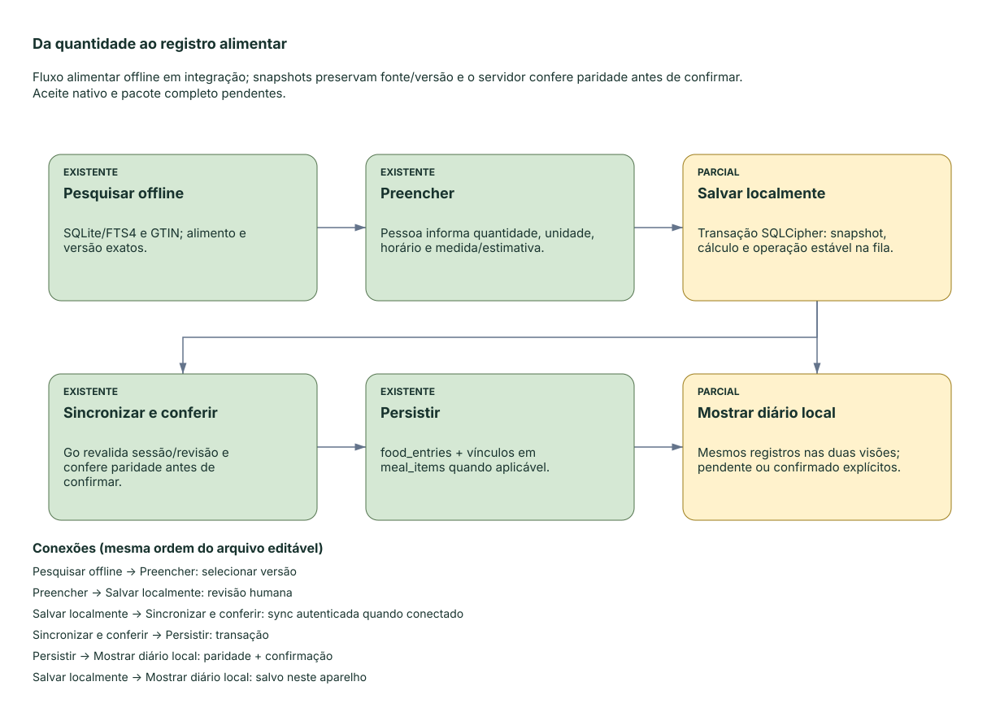
M0–M4 fecham a primeira extração do catálogo. Comprar mídia não publica automaticamente programas ou doses.
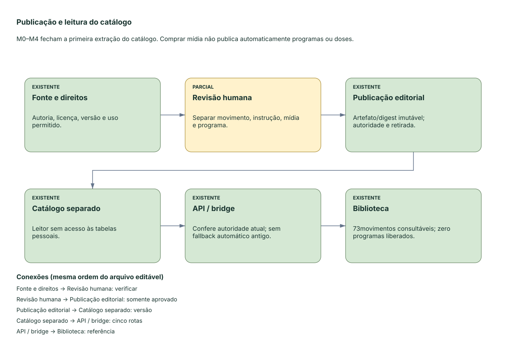
Banco é fonte dos registros confirmados. Apagar dados do app não equivale a excluir a conta do servidor.
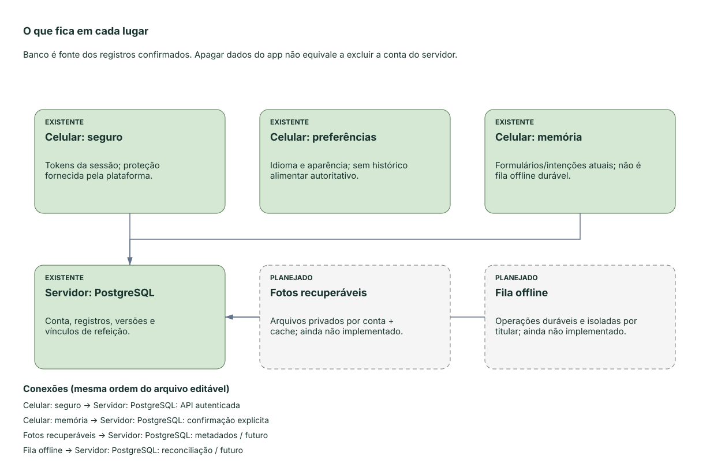
status e plan-stop só consultam. Não executar init/activate/restore para abrir o app no dia a dia.
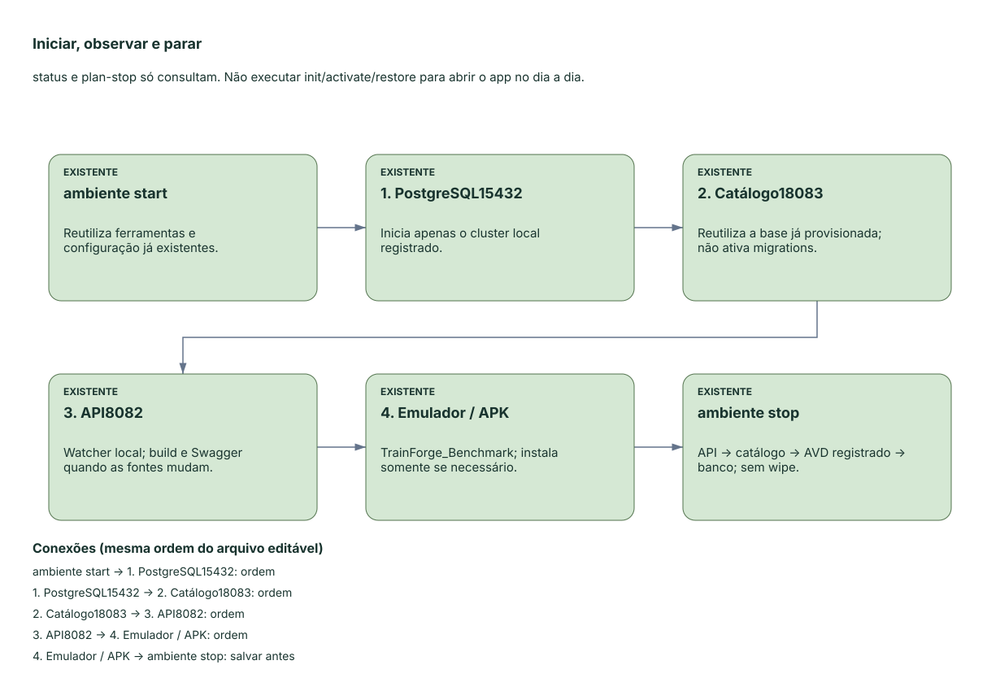
Proposta, não infraestrutura existente. Cache/offline da mídia depende de esclarecer compatibilidade com a cláusula3 da licença.
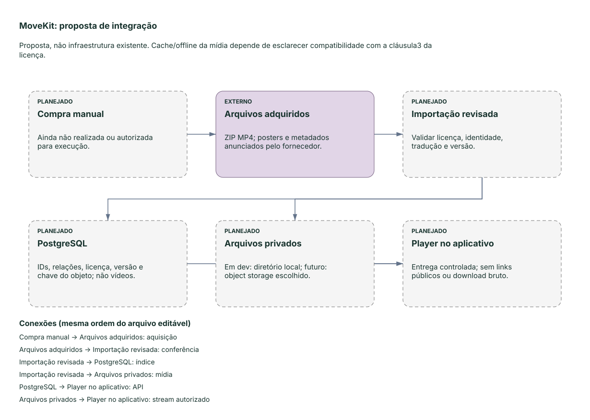
Workflows usam filtros de caminhos; nem todos executam em todo commit. Sonar/carga/release integral ainda têm gates próprios.
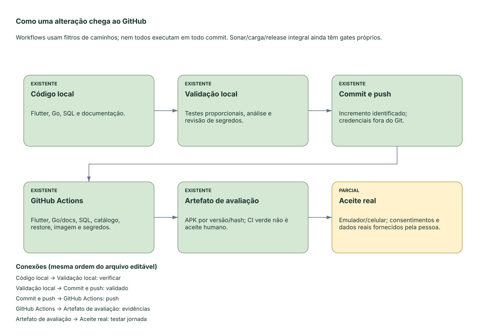
Seta FK: tabela de origem referencia a de destino; tabelas não chamam outras. Colunas completas, cardinalidades/constraints e responsabilidades em banco.md. Tabela existente não comprova jornada implementada.
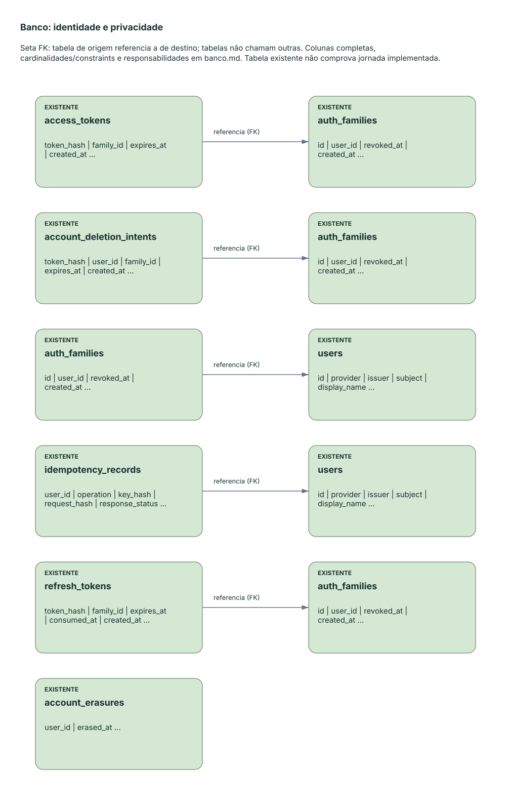
Seta FK: tabela de origem referencia a de destino; tabelas não chamam outras. Colunas completas, cardinalidades/constraints e responsabilidades em banco.md. Tabela existente não comprova jornada implementada.
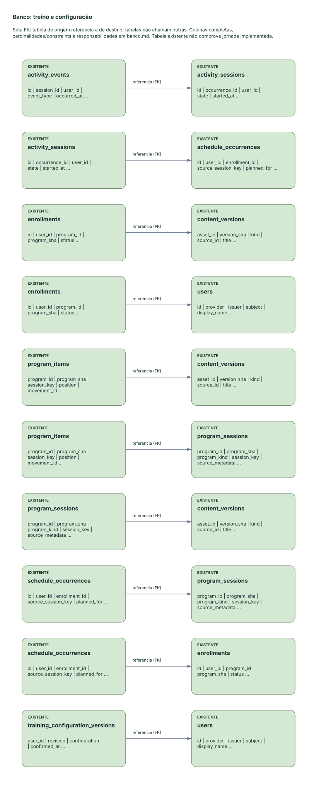
Seta FK: tabela de origem referencia a de destino; tabelas não chamam outras. Colunas completas, cardinalidades/constraints e responsabilidades em banco.md. Tabela existente não comprova jornada implementada.
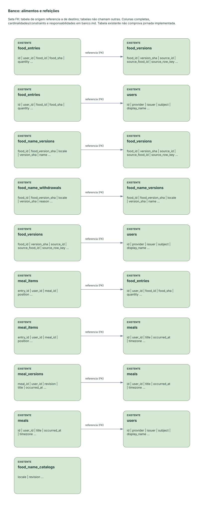
Seta FK: tabela de origem referencia a de destino; tabelas não chamam outras. Colunas completas, cardinalidades/constraints e responsabilidades em banco.md. Tabela existente não comprova jornada implementada.
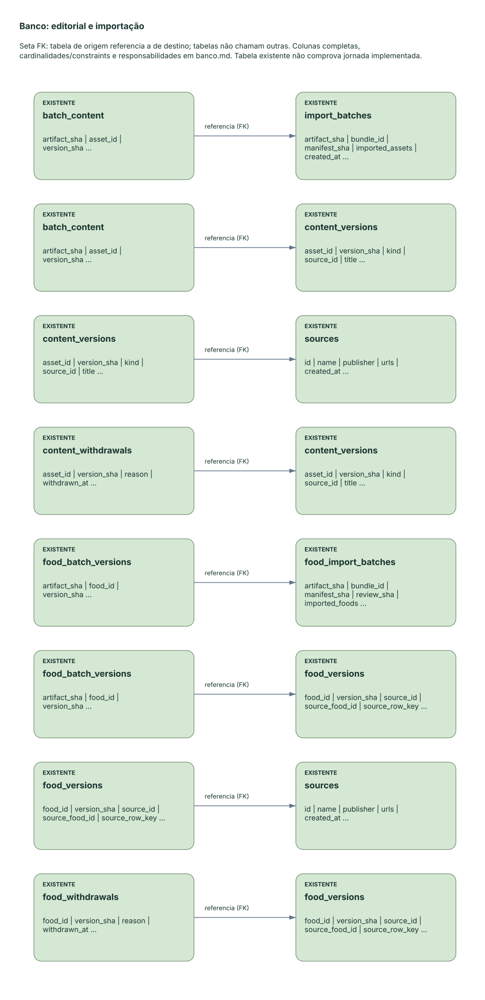
Banco independente no cluster local. Sem users, tokens, alimentação privada ou cópias de fotos.
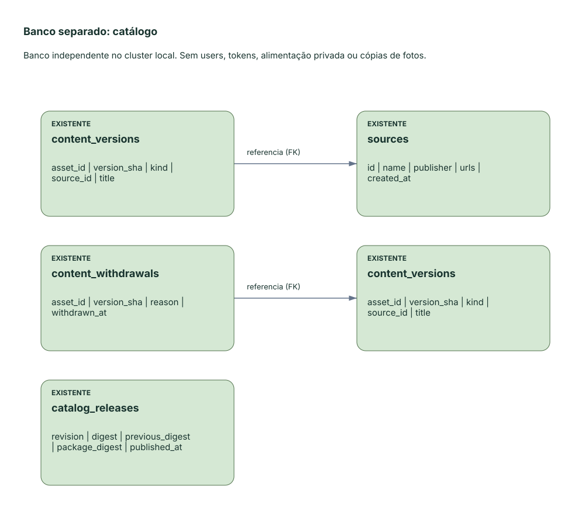